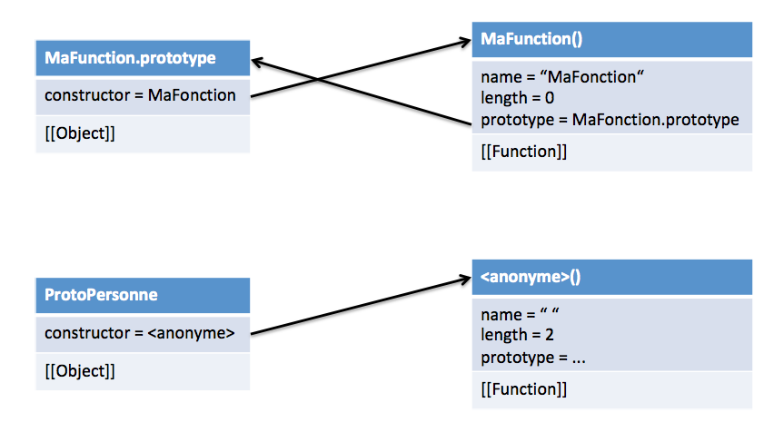

Big bang → Apparition de l'homme → Javascript
Voir
Mocha emprunte la syntaxe de Java et conserve l'aspect fonctionnel de Scheme, et l'orienté objet par prototypes de Smalltalk.
Le nom Mocha évoluera vers LiveScript, puis vers Javascript pour rappeler Java.
On a donc d'un côté Javascript, souple et léger, et Java, plus lourd mais plus riche, utilisé pour développer des composants web.
A l'époque la concurrence était rude entre Netscape (Navigator) et Microsoft (Internet Explorer). Microsoft a donc proposé sa propre implémentation de Javascript qu'il a nommé JScript.
Bien évidemment, Javascript et JScript ne sont pas compatibles, car les fondements du langage n'ont pas été standardisés... Les développeurs devaient donc développer en double leurs sites, ou apposer un des fameux "Best viewed with Netscape" or "Best viewed with Internet Explorer".
ECMA European Computer Manufacturer Association, fondée en 1961, se consacre à la standardisation de systèmes d'information et de communication.
En novembre 1996, Netscape soumet Javascript à ECMA pour en faire une spécification standard :
De nos jours, ECMAScript désigne le standard ECMA-262 et Javascript désigne le langage en pratique (son implémentation).
| Version | Date | Description |
| 1 | 06/1997 | Première édition |
| 2 | 06/1998 | Modifications cosmétiques |
| 3 | 12/1999 | Ajout des expressions régulières, try/catch, meilleure gestion des chaînes, etc. |
| 4 | abandonnée | |
| 5 | 12/2009 | Mode strict, clarification d'ambiguités dans ES3, getters/setters, support JSON, réflexion sur les objets |
| 6 / ES2015 | 06/2015 | Classes/modules, itérateurs, arrow functions, tableaux typés, collections, promesses, améliorations maths, réflexion et proxies |
| 7 / ES2016 | 06/2016 | Amélioration de la prise en compte d'ES2015, ajout de l'exponentiation ** et de la fonction Array.prototype.includes |
| 8 / ES2017 | 06/2017 | Asychronisme avec await/async |
| 9 / ES2018 | 06/2018 | Rest/Spread properties, amélioration des RegExp |
| ES2019 | 06/2019 | Array flattening, Object.fromEntries, amélioration JSON |
| ES2020 | 06/2020 | BigInt, Dynamic Import, optional chaining, matchAll, etc. |
Chaque proposition d'amélioration est discutée par le comité technique TC39 et progressivement validée
Pour plus de détails sur le processus d'évolution du standard et l'histoire de Javascript :
Parmi tous les nombreux moteurs interprétant Javascript, on retiendra les trois principaux :
Tous 3 supportent la dernière spécification ES2018. D'autres (comme Chakra pour MS Edge) bloquent à des versions antérieures d'ES et ne proposent éventuellement que certaines fonctionnalités d'ES2018.
A noter que pour des questions de performances, ces moteurs utilisent la technique de compilation Just-In-Time,
qui consiste à compiler à la voler le programme plutôt qu'avant son exécution (compromis entre compilation
ahead-of-time et interprétation).
Mauvaises nouvelles : le standard évolue régulièrement, et même si les navigateurs suivent, les utilisateurs ne les mettent pas forcément à jour systématiquement.
Plus de détails :
On retrouve en Javascript les ingrédients principaux en terme de syntaxe du langage Java :
;// ou sur (potentiellement) plusieurs /* ... */{ ... }if, while, for, etc.En Javascript, les variables servent à stocker des valeurs. Dans une portée donnée, toutes les variables doivent être uniques.
| Instruction | Description |
var x = 42; |
déclare une variable nommée x qui a pour valeur initiale 42 |
var y; |
déclare une variable qui n'a pas encore de valeur (valeur undefined) |
y = "42"; |
assigne à la variable y (déclarée précédemment) la chaîne "42" |
var z = 42, t = y; |
permet de déclarer deux variables (z et t) et de leur affecter leurs valeurs initiales(resp. 42 et la valeur de la variable y définie précédemment) |
Comme en Java, le nommage des variables est régi par les règles suivantes :
_, $ et ne doivent pas commencer par un chiffrex et X sont deux noms différentsnumber - tous les nombres entiers ou flottants : 42, 1.0, -42e3boolean - valeurs booléenne : true, false, 42 > "5"string - chaînes de caractères délimitées par des guillemets simples ou doubles : "Quarante-Deux", 'La réponse à la grande question sur la vie, l\'univers et tout le reste.', "42" object - type agrégé avec prototype : {prenom: "Fred", nombre: 42}date - type Date avec fonctions de manipulation Date()array - tableaux : [], [42, "quarante-deux"]function - une fonction, first-class citizen en Javascript : function(...) { ... }undefined - type d'une variable non définietrue, false - valeurs booléennesInfinity - l'infiniNaN - not a numberundefined - absence de valeur (cas d'une variable déclarée, mais non définie/affectée)null - valeur vide (mais valeur quand même)Javascript est faiblement typé, cela signifie que :
var x = 42;x = "Quarante-Deux"; var y = 40 + 2 * x; va nécessiter la conversion de la valeur de x calculer y (type casting/conversion/coercion). | Valeur booléenne | En nombre | En chaîne |
false | 0 | "false" |
true | 1 | "true" |
| Valeur numérique | En chaîne | En booléen |
0 | "0" | false |
1 | "1" | true |
42 | "42" | true |
0.0 | "0.0" | false |
NaN | "NaN" | false |
Infinity | "Infinity" | true |
-Infinity | "-Infinity" | true |
| Valeur | En nombre | En booléen |
"0" | 0 | true (!) |
"000" | 0 | true (!) |
"42" | 42 | true |
"" | 0 (!) | false (!) |
"quarante-deux" | NaN | true |
On peut se dire que la valeur booléenne d'une chaîne s correspond à s.length > 0.
| Valeur | En nombre | En chaîne | En booléen |
[] | 0 (!) | "" | true |
[42] | 42 (!) | "42" | true |
[40,2] | NaN | "40,2" | true |
["quarante"] | NaN | "quarante" | true |
["quarante",2] | NaN | "quarante,2" | true |
| Valeur | En nombre | En chaîne | En booléen |
| Conversions d'objets : | |||
{} | NaN | "[object Object]" | true |
| Conversions de fonctions : | |||
function(...){...} | Nan | "function(...){...}" | true |
| Conversions de valeurs remarquables : | |||
null | 0 (!) | "null" | false |
undefined | NaN | "undefined" | false |
Number("42") | → 42 |
Number(false) | → 0 |
String(42) | → "42" |
String([42,"quarante-deux"]) | → "42,quarante-deux" |
"4.2" * 10 | → 42 |
"42" + 40 + 2 | → "42402" |
40 + 2 + "42" | → "4242" |
"42" < 43 | → true |
type of permet de connaître le type d'une valeur. Cette fonction renvoie une chaîne de caractères.
typeof "42" | → "string" |
typeof 42 | → "number" |
typeof 42 == "42" | → "boolean" |
typeof {} | → "object" |
typeof {x: 42} | → "object" |
typeof [42] | → "object" (!) |
typeof new Date() | → "object" (!) |
typeof function(...){...} | → "function" |
typeof null | → "object" |
typeof undefined | → "undefined" |
La propriété constructor appliqué à n'importe quelle donnée permet de connaître un peu plus précisément son type.
"42".constructor | → function String() {...} |
42.constructor | → function Number() {...} |
true.constructor | → function Boolean() {...} |
{}.constructor | → function Object() {...} |
[42].constructor | → function Array() {...} (!) |
new Date().constructor | → function Date() {...} (!) |
function(...){...}.constructor | → function Function() {...} |
On retrouve les opérateurs arithmétiques qui opèrent entre deux nombres :
| Opérateur | Exemple | |
+ | 40 + 2 | → 42 |
- | 45 - 3 | → 42 |
* | 6 * 7 | → 42 |
/ | 255 / 6 | → 42.5 |
% | 255 % 6 | → 3 |
On retrouve les opérateurs classique d'affectation :
| Opérateur | Exemple | Equivalent à |
= | x = y | x = y |
+= | x += 42 | x = x + 42 |
-= | x -= 42 | x = x - 42 |
*= | x *= 42 | x = x * 42 |
/= | x /= 42 | x = x / 42 |
%= | x %= 42 | x = x % 42 |
++ | x++ | x = x + 1 |
-- | x-- | x = x - 1 |
Comparaison des valeurs (avec conversion de type)
| Opérateur | Exemple | Valeur |
== | 42 == 42 | true |
42 == 40 | false | |
42 == "42" | true | |
null == undefined | true | |
!= | 42 != 42 | false |
42 != 40 | true | |
42 != "40" | true |
Comparaison des types et des valeurs
| Opérateur | Exemple | Valeur |
=== | 42 === 42 | true |
42 === 40 | false | |
42 === "42" | false | |
null === undefined | false | |
!== | 42 !== 42 | false |
42 !== 40 | true | |
42 !== "42" | true |
| Opérateur | Exemple | Valeur |
>= | 42 >= 40 | true |
40 >= 42 | false | |
"abc" >= "ABC" | true | |
42 >= "40" | false | |
true >= 0 | true | |
[4] >= 42 | false | |
"d" >= function(){} | false | |
> | 42 > "40" | false |
<= | 42 <= 40 | true |
< | 42 < "40a" | false |
Ces opérateurs s'appliquent entre chaînes ou entre nombres. Les données sont automatiquement converties vers l'un ou l'autre de ces types.
Opérateurs booléens
| Opérateur | Exemple | Valeur |
&& | true && false | false |
|| | true || false | true |
! | !"42" | false |
Tester le type d'un objet
| Opérateur | Exemple | Valeur |
instanceof | [] instanceof Array | true |
[] instanceof Object | true |
Opérateurs bit-à-bit (sur nombres 32 bits)
| Opérateur | Exemple | Valeur |
& | 5 & 2 | 0 |
| | 5 | 2 | 7 |
~ | ~ 5 | -6 |
^ | 5 ^ 2 | 7 |
<< | 5 << 2 | 20 |
>> | -5 >> 2 | -2 |
>>> | -5 >>> 2 | 1073741822 |
Ces opérateurs peuvent être également être utilisés
dans des affectations (ex. x >>= 2).
| Niveau | Opérateur | Signification | Exemple |
| 19 | (...) | Groupement | (40+2) |
| 18 | . | accès à une propriété | point.x |
[] | accès à une propriété | point["x"] |
|
| 17 | () | appel de fonction | calcul() |
new | création d'objet | new Point() |
|
| 16 | ++ | incrément postfixé | i++ |
-- | décrément postfixé | i-- |
|
| 15 | ++ | incrément préfixé | ++i |
-- | décrément préfixé | --i |
|
! | non logique | !(42 == "42") |
|
typeof | type d'une donnée | typeof 42 |
Source :
| Niveau | Opérateur | Signification | Exemple |
| 14 | * | multiplication | 6 * 7 |
/ | division | 21 / 0.5 |
|
% | modulo | 85 % 43 |
|
** | exponentiel | 2 ** 16 |
|
| 13 | + | addition | 40 + 2 |
- | soustraction | 45 - 3 |
|
| 12 | << | décalage vers la gauche | x << 2 |
>> | décalage vers la droite | x >> 2 |
|
>>> | décalage vers la droite non signé | x >>> 2 |
Source :
| Niveau | Opérateur | Signification | Exemple |
| 11 | < | inférieur | 6 < 7 |
<= | inférieur ou égal | 6 <= 7 |
|
>= | supérieur | 6 > 7 |
|
>= | supérieur ou égal | 6 <= 7 |
|
| 10 | == | égalité | 42 == "42" |
=== | égalité stricte | 42 === "42" |
|
!= | inégalité | 42 != "40" |
|
!== | inégalité stricte | 42 !== "42" |
|
| 6 | && | et logique | true && false |
| 5 | || | ou logique | true || false |
| Niveau | Opérateur | Signification | Exemple |
| 3 | = | affectation | x = 42 |
+= | affectation | x += 42 |
|
-= | affectation | x -= 42 |
|
*= | affectation | x *= 42 |
|
/= | affectation | x /= 42 |
|
%= | affectation | x %= 42 |
|
<<= | affectation | x <<= 2 |
|
>>= | affectation | x >>= 2 |
|
>>>= | affectation | x >>>= 2 |
|
&= | affectation | x &= 2 |
|
^= | affectation | x ^= 2 |
|
|= | affectation | x |= 2 |
| Description | Syntaxe |
| Blocs de code | { ... } |
une seule instruction | |
| Alternatives | if (...) ... else ... |
... ? ... : ... | |
switch (...) { case ... } | |
| Boucles | while (...) ... |
do ... while (...) | |
for (... ; ... ; ...) ... |
for ... infor ... ofthrowtry ... catch ... finallycontinuebreak42 (sans décimales), 4.2 (avec décimales),
4.2e1 ou 0.42e-2 (exposant pour les grands nombres). 0.1 + 0.2 → 0.30000000000000004 --
solution : réécrire en (0.1*10 + 0.2*10)/10Plus de détails :
Javascript utilise l'opérateur + pour l'addition et la concaténation.
| Expression | Résultat | |
10 + 20 | → | 30 |
"10" + "20" | → | "1020" |
10 + "20" | → | "1020" |
"10" + 20 | → | "1020" |
"Le résultat est " + 10 + 20 | → | "Le résultat est 1020" |
10 + 20 + "30" | → | "3030" |
Javascript fonctionne de gauche à droite.
Pour les autres opérations de calcul, les chaînes sont converties en nombre...quand c'est possible.
| Expression | Résultat | |
"100" / "10" | → | 10 |
"100" * "10" | → | 1000 |
"100" - "10" | → | 90 |
100 / "babar" | → | NaN |
La valeur NaN peut rapidement apparaître et se propager dans les calculs.
| Expression | Résultat | |
5 + NaN | → | NaN |
NaN + "5" | → | "NaN5" |
typeof NaN | → | "number" |
Il n'y a pas d'erreur de division par 0...mais est-ce un bien ?
Toutes les subtilités de la coercion de type en Javascript :
La valeur Infinity (ou -Infinity) désigne un nombre trop
grand pour être représenté.
| Expression | Résultat | |
2 / 0 | → | Infinity |
-2 / 0 | → | -Infinity |
typeof Infinity | → | "number" |
Par défaut, les nombres sont en décimal. Il est possible de les écrire en
hexadécimal en les préfixant par 0x (ex. 0x2A).
On peut utiliser la méthode toString(base) pour afficher
le nombre dans la base souhaitée.
| Expression | Résultat | |
var x = 42; | ||
x.toString(16) | → | "2a" |
x.toString(8) | → | "52" |
x.toString(2) | → | "101010" |
Les nombres peuvent aussi se représenter comme des objets.
var l = 42; (littéral -- typeof l → "number")
var o = new Number(42) (objet -- typeof o → "object")
| Expression | Résultat | |
42 == new Number(42) | → | true |
42 === new Number(42) | → | false |
new Number(42) == new Number(42) | → | false |
new Number(42) === new Number(42) | → | false |
Number(42) === Number(42) | → | true |
Il est fortement déconseillé de créer des objets Number (temps de calcul, coût mémoire).
| Propriété | Description |
MAX_VALUE | Valeur maximale possible (1.7976931348623157e+308) |
MIN_VALUE | Valeur minimale possible (5e-324) |
POSITIVE_INFINITY | Infini positif (Infinity) |
NEGATIVE_INFINITY | Infini négatif (-Infinity) |
NaN | Valeur Not-a-Number |
Méthodes statiques (pas besoin de créer d'objet pour les invoquer) :
| Méthode | Description | Exemple | |
isFinite(n) | Vérifie si n est un nombre fini | Number.isFinite(42) | → true |
Number.isFinite(Infinity) | → false | ||
isInteger(n) | Vérifie si n est un nombre entier | Number.isInteger(42) | → true |
Number.isFinite(4.2) | → false | ||
isNaN(n) | Vérifie si n n'est pas un nombre | Number.isNaN(42) | → false |
Number.isNaN(42/"babar") | → true | ||
isSafeInteger(n) | Vérifie si n est un entier qui peut être représenté par un réel double précision selon IEEE 754 | Number.isSafeInteger(42) | → true |
Number.isSafeInteger(Math.pow(2,53)-1) | → true | ||
Number.isSafeInteger(Math.pow(2,53)) | → false | ||
Number.isSafeInteger("42") | → false | ||
Méthodes d'instance (qui s'invoquent sur un nombre variable ou objet) :
| Méthode | Description | Exemple |
toExponential(x) | retourne le nombre en notation exponentielle x (optionnel) donne le nombre de digits (0 à 20) | var n = 42; |
toFixed(x) | retourne le nombre avec x décimales | var n = 0.49; |
toPrecision(x) | retourne le nombre écrit avec x digits | var n = 0.49; |
La principale propriété est la constante Math.PI. La classe Math propose également (entre autres) le nombre d'Euler (Math.E), les logarithmes néperiens de 2 (Math.LN2), la racine de 2 (Math.SQRT2) etc.
Math.abs(x)), exponentielle (Math.exp(x)), logarithme
(Math.log(x)), puissance (Math.pow(x,y)), et racine carrée (Math.sqrt(x))Math.cos(x)), sinus (Math.sin(x)),
tangeante (Math.tan(x)), etc. Math.floor(x)), à l'entier supérieur (Math.ceil(x)),
à l'entier le plus proche (Math.round(x))Math.min(a,b,...)), maxium (Math.max(a,b,...))
génération aléatoire (Math.random() qui renvoie un réel entre 0 inclus et 1 exclu)Plus de détails sur l'objet Math :
Les chaînes de caractères sont une suite de caractères délimités par des guillemets simples (ex. 'Fred') ou
doubles (ex. "Fred"). Contrairement à PHP le choix de l'un ou l'autre des délimiteurs ne fait pas de
différence.
La longueur d'une chaîne est donnée par la propriété length (sans les parenthèses !) -
Exemple : "Fred".length → 4
Classiquement, les indices des chaînes commencent à 0.
Les méthodes les plus utilisées sont similaires à celles proposées par Java.
| Méthode | Description | Exemple |
charAt(i) | Renvoie le caractère à l'indice i | "Fred".charAt(1) → "r" |
indexOf(c) | Renvoie l'indice de la première occurrence de c | "Frederic".indexOf("r") → 1 |
lastIndexOf(c) | Renvoie l'indice de la dernière occurrence de c | "Frederic".lastIndexOf("r") → 5 |
startsWith(c) | Teste si la chaîne commence par c | "Fred".startsWith("Fr") → true |
endsWith(c) | Teste si la chaîne termine par c | "Fred".endsWith("d ") → false |
includes(s,i) | Teste si la sous-chaîne s est présente depuis l'indice i | "Frederic".includes("er") → true |
| Méthode | Description | Exemple |
substring(i1,i2) | Extrait la sous-chaîne entre i1 (inclus)et i2 (exclus) | "Frederic".substring(2,4) → "ed" |
substr(i,l) | Extrait la sous-chaîne de longueur lcommençant à i | "Frederic".substr(2,4) → "eder" |
trim() | Enlève les espaces au début et en fin de chaîne | " Fred ".trim() → "Fred" |
concat(s) | Concatène à la chaîne s | "Fred".concat("eric") → "Frederic" |
repeat(n) | Répète la chaîne n fois | "Fred".repeat(2) → "FredFred" |
toUpperCase() | Mise en majuscule des lettres | "Fred!".toUpperCase() → "FRED!" |
toLowerCase() | Mise en minuscule des lettres | "Fred!".toLowerCase() → "fred!" |
split(d) | Découpage d'une chaîne par rapport au délimiteur d | "Frederic".split("e") → ["Fr","d","ric"]"Fred".split("") → ["F","r","e","d"] |
Toutes les méthodes retournent une nouvelle chaîne.
Introduits par ES2015, cette construction (également appelée littéraux de gabarits) permet d'intégrer à une chaîne de caractères des expressions.
Les littéraux de gabarits sont délimités par des ` (accent grave) au lieu des habituels guillemets
simples ou doubles.
Il est possible de faire apparaître des expressions délimitées par ${...} au sein de la chaîne et qui
seront évaluées et substituées pour construire la chaîne. Par ailleurs, il est possible de déclarer des chaînes
multi-lignes.
Cette utilisation est la plus courante des littéraux de gabarit, mais nous reviendrons plus tard sur d'autres types.
Certaines fonctions sur les chaînes fonctionnent avec des expressions régulières. Celles-ci permettent de décrire des ensembles de chaînes de caractères, reconnues (matchées) par ces expressions régulières.
Une expression régulière est composée de deux éléments : un pattern et un modifie(u)r sous le format :
var patt = /pattern/modifier
On dénote 3 modifieurs :
| Modifieur | Description |
i | Réalise un pattern-matching insensible à la casse. |
g | Réalise un pattern-matching global, qui ne s'arrête pas à la première sous-chaîne reconnue. |
m | Réalise un pattern-matching multi-lignes, qui prend en compte les retours à la ligne. |
La notation avec [ ] ou ( | ) permet de liste des caractères/chaînes/sous-chaîne autorisées.
| Notation | Description |
[abc] | Trouve un des caractères entre les crochets. |
[^abc] | Trouve un des caractères qui n'est pas entre les crochets. |
[a-zA-Z] | Trouve un des caractères dans les intervalles entre crochets. |
[^a-zA-Z] | Trouve un des caractères qui n'est pas dans les intervalles entre crochets. |
(a|b|c) | Trouve un des caractères séparés par des |. |
Une partie de schéma peut-être répétée en utilisant des quantificateurs.
| Notation | Description |
n+ | Reconnaît une chaîne contenant au moins une occurrence de n. |
n* | Reconnaît une chaîne contenant 0 ou plusieurs occurrences de n. |
n? | Reconnaît une chaîne contenant 0 ou une occurrence de n. |
n{X,Y} | Reconnaît une chaîne contenant entre X et Y répétitions de n. |
n{X} | Reconnaît une chaîne contenant X répétitions de n. |
n{X,} | Reconnaît une chaîne contenant au moins X répétitions de n. |
^n | Reconnaît une chaîne qui commence par n. |
n$ | Reconnaît une chaîne qui termine par n. |
Plutôt que d'énumerer les caractères autorisés/interdits individuellement, on peut utiliser des meta-caractères.
| Notation | Description | |
. | N'importe quel caractère (excepté les retours à la ligne). | |
\w / \W | N'importe quel caractère d'un mot/qui n'est pas d'un mot. | |
\d / \D | N'importe quel chiffre/caractère qui n'est pas un chiffre. | |
\s / \S | N'importe quel caractère d'espacement/qui n'est pas un espacement. | |
\b / \B | Reconnaît une sous-chaîne qui est/n'est pas au début ou à la fin d'un mot. | |
\0 | Le caractère NUL. | |
\n | Le caractère de retour à la ligne. | |
\t | Le caractère de tabulation. | |
\r | Le caractère de retour chariot. | |
| ... | ||
| Description | Expression régulière |
| Nom d'utilisateur | /^[a-z0-9_-]{3,16}$/i |
| Mot de passe | /^[a-z0-9_-]{6,18}$/i |
| Valeur hexadécimale | /^#?([a-f0-9]{6}|[a-f0-9]{3})$/i |
| Adresse email | /^([a-z0-9_\.-]+)@([\da-z\.-]+)\.([a-z\.]{2,6})$/i |
| URL | /^(https?:\/\/)?([\da-z\.-]+)\.([a-z\.]{2,6})([\/\w \.-]*)*\/?$/i |
| Adresse IP | /^(?:(?:25[0-5]|2[0-4][0-9]|[01]?[0-9][0-9]?)\.){3}(?:25[0-5]|2[0-4][0-9]|[01]?[0-9][0-9]?)$/i |
| Méthode | Description |
search(regexp) |
Renvoie l'indice de la première occurrence de regexp. |
match(regexp) |
Renvoie un tableau des sous-chaînes reconnues par l'expression régulière, null si aucune n'est reconnue. |
replace(regexp,str) |
Replace les occurrences de regexp par la chaîne str. |
Contrairement aux nombres et aux chaînes, les dates sont nécessairement encapsulées dans un objet Date.
Une date est représentée par un jour, un mois, une année, une heure, des minutes, des secondes et des millisecondes.
| Constructeur | Description |
new Date() | Construit la date courante. |
new Date(millisecondes) | Construit une date correspondant au nombre de millisecondes écoulées depuis le 1er janvier 1970 à minuit (temps zéro). |
new Date(chaine) |
Construit une date correspondant à la chaîne |
new Date(année, mois, jour, heure, min, sec, millisec) |
Construit une date correspondant à jour/mois+1/année heure:min:sec (le mois de janvier vaut 0). |
Pour plus de détails sur les formats de chaînes de caractères associés aux dates :
| Méthode | Description |
getDate()/setDate(d) | Retourne/spécifie le jour du mois (1-31). |
getDay()/setDay(d) | Retourne/spécifie le jour de la semaine (0-6). |
getFullYear()/setFullYear(d) | Retourne/spécifie l'année. |
getHours()/setHours(d) | Retourne/spécifie l'heure (0-23). |
getMilliseconds()/setMilliseconds(d) | Retourne/spécifie les millisecondes. |
getMinutes()/setMinutes(d) | Retourne/spécifie les minutes (0-59). |
getMonth()/setMonth(d) | Retourne/spécifie le mois (0-11). |
getSeconds()/setSeconds(d) | Retourne/spécifie les secondes (0-59). |
getTime()/setTime(d) | Retourne/spécifie le nombre de secondes depuis "temps zéro". |
Une variante de ces méthodes existe avec UTC (ex. getUTCTime()) pour spécifier la date par rapport à UTC.
Par défaut les dates manipulées correspondent à la locale du poste client.
| Méthode | Description |
now() | Retourne le nombre de secondes depuis le temps zéro (méthode statique)
Usage : Date.now() |
parse(chaine) | Extrait une date de la chaîne de caractères (ex. Date.parse("January, 8th 2017")). |
getTimezoneOffset() | Retourne la différence de temps entre le temps local et UTC, en minutes. (ex. pour la France : 60). |
toLocaleDateString() | Retourne la partie date d'un objet Date en fonction de la zone. (ex. pour la France : "2017-12-1"). |
toLocaleTimeString() | Retourne la partie horaire d'un objet Date en fonction de la zone. (ex. pour la France : "15:48:32"). |
toString() | Retourne une chaîne représentant la date courante (ex. "Fri Dec 01 2017 15:41:50 GMT+0100 (CET)"). |
toISOString() | Retourne une chaine représentant la date courante au format ISO-8601 (ex. "2017-12-01T14:44:14.195Z") |
Javascript propose quelques fonctions et propriétés globales qui n'appartiennent officiellement pas à un objet
spécifique (en réalité, si : ce sont des propriétés et des méthodes proposées par un objet global qui appartient
à l'environnement dans lequel s'exécute le moteur -- par ex. l'objet window du navigateur).
| Constante | Description |
Infinity | Valeur numérique représentant l'infini (positif/négatif) |
NaN | Valeur "Not-a-Number" |
undefined | Indique qu'une variable n'a pas été assignée. |
| Fonction | Description | Exemple |
String(x) | Calcule la valeur de x comme chaîne. | String([]) → "" |
Number(x) | Calcule la valeur numérique de x. | Number([]) → 0 |
Boolean(x) | Calcule la valeur booléenne de x. | Boolean([]) → true |
isNaN(x) | Teste si x n'est pas un nombre. | isNaN(2/"babar") → true |
isFinite(x) | Teste si x est un nombre fini. | isFinite(Infinity) → false |
parseInt(x) | Extrait un entier de la chaîne x. | parseInt("42 is ze best") → 42 |
parseInt("j'aime 42") → NaN | ||
parseFloat(x) | Extrait un réel flottant de la chaîne x. | parseFloat("42.5 isn't ze best") → 42.5 |
| Fonction | Description |
encodeURI(x) | Encode l'url x en remplaçant les caractères spéciaux (sauf , / ? : @ & = + $ #). |
encodeURIComponent(x) | Encode l'url x en remplaçant les caractères spéciaux (y compris , / ? : @ & = + $ #). |
decodeURI(x) | Decode l'url x. |
decodeURIComponent(x) | Decode l'url x. |
eval(code) | Evalue le code Javascript représenté par la chaîne code. |
Les fonctions :
En Javascript, le typage est dynamique, de ce fait, quand on déclare une fonction :
Et en plus, on peut appeler la fonction sans renseigner tous ses paramètres.
function nomFonction(argument1,argument2,...) {
... // code de la fonction
}
Si un appel de fonction ne présente pas assez de paramètres par rapport à la signature
déclarée, les valeurs manquantes sont undefined.
Si un appel de fonction propose trop de valeurs de paramètres, les valeurs en trop sont ignorées.
Classiquement, la valeur retournée par la fonction est renvoyée par return.
Si la fonction ne renvoie aucune valeur, alors sa valeur de retour est undefined.
Chaque fonction présente un objet arguments qui est un tableau
permettant d'accéder aux arguments de la fonction appelée et permet de connaître leur nombre,
valeurs, etc.
Il est possible d'utiliser la notation ... pour désigner un nombre d'arguments quelconque. Cette notation
(appelée Rest) ne s'applique, si nécessaire, qu'au dernier paramètre. Les arguments sont ensuite accédés comme un tableau.
A l'inverse, il est également possible d'utiliser la notation ... (appelée cette fois-ci Spread) sur un tableau lors d'un
appel de fonction. Les valeurs du tableau seront alors utilisées comme les différents arguments de la
fonction.
Les arguments sont passés par valeur. La fonction n'a accès qu'aux valeurs, pas à l'emplacement mémoire des arguments. De ce fait, si la valeur d'un argument est changée par la fonction, cela n'affecte pas la variable initiale.
Les références sont les valeurs des objets. Si la fonction modifie la valeur d'attribut d'un objet en paramètre, celui-ci restera modifié.
var) en dehors de toute fonction, qui
seront accessibles de n'importe où (ie. dans n'importe quelle fonction ou en dehors), mais aussi les variables
affectées dans une fonction sans avoir été déclarées (!)var) dans une fonction, qui
ne seront accessible que depuis la fonction où elles sont déclarées. Pour pallier au problème de portée des variables déclarées avec var, ES2017 a introduit
deux mots-clés pour définir des données :
const qui permet de définir une constante. Celle-ci constante devra obligatoirement être déclarée avec une valeur assignée. let qui permet de déclarer une variable locale au bloc de code considéré. La notation vue précédemment function f(...) { ... } est une déclaration de fonction. On peut aussi
définir une fonction comme une expression qui sera stockée dans une variable.
var f = function(arguments...) { /* ... code de la fonction ... */ }
On déclare ainsi une fonction anonyme qui sera appelée par l'intermédiaire de la variable dans laquelle elle est enregistrée.
ES2015 a introduit les fonctions fléchées (arrow functions). Il s'agit d'un sucre syntaxique [avec une petite subtilité, on y reviendra plus tard] pour la déclaration d'une fonction dans le plus pure style de la programmation fonctionnelle à la Caml.
| Au lieu d'écrire : | on pourra écrire : |
function (a, b) { | (a, b) => { return a + b; } |
function (a, b) { | (a, b) => a + b;S'il n'y a qu'une instruction on économise le return |
function (a) { | a => a * a;S'il n'y a qu'un seul paramètre, pas besoin de (...) |
Voir
Functional programming in Javascript :
Cette pratique consiste à déclarer une fonction qui s'exécute immédiatement. L'intérêt principal est de créer une portée locale dont les variables ne viendront pas "polluer" le scope global.
Les gabarits de chaîne peuvent aussi contenir des étiquettes grâce à la syntaxe etiquette`...`.
On parle alors de gabarits étiquetés.
Dans ce cas l'étiquette est une fonction function(chaines, ...expressions) où le premier paramètre
est un tableau des différentes sous-chaines "fixes" constituant le gabarit, et les paramètres restants sont les
expressions contenues dans la chaîne.
En Javascript, il existe un mécanisme qui s'applique automatiquement sur le code et qui va remonter les déclarations (fonctions ou variables) en début de script ou de fonction.
De ce fait, les déclarations de fonctions sont remontées, tandis que seule la déclaration de la variable contenant la fonction est remontée, mais pas son initialisation.
Le hoisting est un principe de Javascript qui consiste à faire remonter automatiquement les déclarations (fonctions ou variables) au début du script ou de la fonction correspondante.
Attention, le hoisting a pour effet de ne faire remonter que la déclaration, et pas l'initialisation.
En Javascript une closure est une fonction (anonyme ou non) qui va accéder aux variables de l'environnement dans lequel elle est définie et les utiliser/modifier.
Une closure ("fermeture") est appelée ainsi car elle enferme avec elle les variables qui se trouvaient dans l'environnement où elle est définie. Lorsqu'elle s'exécute, les variables sont accédées et utilisées comme si elles étaient globales, pourtant ces variables restent locales à la fonction dans laquelle elles étaient déclarées.
La curryfication est un processus qui consiste à casser une fonction à plusieurs arguments pour en faire une suite d'appels de fonctions avec chacun des arguments successifs (nom donné d'après Haskell Brooks Curry). En Javascript, les closures permettent de réaliser ce genre de procédé.
Pour plus d'informations sur ce concept (un peu abstrait) :
Les tableaux sont des structures de données classiques qui permettent de stocker plusieurs valeurs.
En Javascript, les tableaux sont toujours indicés par des entiers. Le contenu n'est pas obligatoirement homogène.
Pour déclarer un tableau, on utilise la syntaxe suivante :
var profsDuS6 = ["jube", "fred", "jmh", 42];
Il existe aussi une autre syntaxe pour faire la même chose :
var profsDuS6 = new Array("jube", "fred", "jmh", 42);
Toutefois, bien que les tableaux (tout comme les chaînes) soient considérés comme des objets,
il n'est pas nécessaire de les instancier avec un new pour des questions de
performances.
A noter que new Array(10) créé un tableau vide de taille 10, mais new Array("10")
créé un tableau contenant le seul élément "10".
Pour accéder au contenu d'un tableau, on utilise la notation [indice] classique.
L'indice est forcément une expression de type entier (ou qui sera convertie en entier pour être
évaluée).
La longueur d'un tableau est donnée par sa propriété length.
L'utilisation de typeof ne va pas nous aider : typeof [] → "object".
Trois solutions :
Array.isArray(t), mais celui-ci n'est supporté que depuis ECMAScript 5 (pas sur
les anciens navigateurs). t.constructor.toString()indexOf("Array") > -1 ... un peu tordu non ? t instanceof Array : la meilleure solutionPlusieurs solutions existent, exemple avec t = ["fred", "jube"] :
t[n], sachant que t[0] = "jmh" → ["jmh", "jube"]t[3] = "jmh" → ["fred", "jube", undefined, "jmh"]push(valeur) : t.push("jmh") → ["fred","jube","jmh"]t[t.length] = "jmh"splice qui permet d'insérer des éléments à un indice spécifique en effaçant certains éléments : t.splice(1, 0, "jmh") → ["fred", "jmh", "jube"]| Fonction | Description |
t1.concat(t2, t3, ...) |
Renvoie la concaténation du tableau avec le(s) tableau(x) en paramètre.
var t1 = ["a"], t2 = ["b","c"], t3 = [42]; t1.concat(t2, t3) → ["a", "b", "c", 42] |
t.copyWithin(i, d, f) |
Renvoie le tableau où on a remplacé les éléments à partir de l'indice i par une copiedes éléments entre les indices d (inclus) et f (exclu).var t = ["a","b","c",42]; t.copyWithin(1, 2, 4) → ["a", "c", 42, 42] |
t.fill(v, d, f) |
Remplit le tableau t avec la valeur v entre les indices optionnels d (inclus) et f (exclu). var t = [1, 2, 3, 4, 5]; |
| Fonction | Description |
t.indexOf(e,d) |
Renvoie l'indice de la première occurrence de e dans le tableau, en commençant à l'indice optionnel d.var t = [1, 2, 4, 5, 3, 2, 1];
|
t.lastIndexOf(e,d) |
Renvoie l'indice de la dernière occurrence de e dans le tableau, en commençant à l'indice optionnel d.var t = [1, 2, 4, 5, 3, 2, 1];
|
t.includes(e) |
Teste sur l'élément existe dans le tableau [ES2016].var t = [1, 2, 4, 5, 3, 2, 1];
|
| Fonction | Description |
t.push(e1,e2,...) |
Ajoute en fin de tableau les éléments en paramètres et renvoie la nouvelle taille du tableau.var t = ["fred","jube"]; et t == ["fred","jube","jmh","dermas"]
|
t.unshift(e1,e2,...) |
Ajoute en début de tableau les éléments en paramètres et renvoie la taille du nouveau tableau.var t = ["fred","jube"]; et t == ["jmh","dermas",fred","jube"]
|
t.shift() |
Retire et retourne le premier élément du tableau.var t = ["fred","jube","jmh"]; et t == ["jube", "jmh"]
|
t.pop() |
Retire et renvoie le dernier élément du tableau.var t = ["fred","jube"]; et t == ["fred"]
|
| Fonction | Description |
t.reverse() |
Inverse l'ordre des éléments du tableau et revoie celui-ci.var t = ["fred","jube","jmh"];
|
t.splice(i,n, e1, e2,...) |
Ajoute les éléments à l'indice i, et supprime à cet indice n éléments qui
seront renvoyés par la fonction.var t = ["fred","jube","jmh","dermas"] et t == ["fred","jube","karla","dermas"]
|
| Fonction | Description |
t.join(sep) |
Renvoie une chaîne dans laquelle les éléments de t sont joints par le séparateur sep (optionnel - par défaut ,)var t = [1, 2, 3, 4, 5]; |
t.slice(d,f) |
Retourne un sous-tableau contenant les éléments du tableau entre l'indice d (inclus) et
f (exclu).var t = ["fred","jube","jmh","dermas"]
|
| Fonction | Description |
t.every(f) |
Vérifie si tous les éléments du tableau vérifient la fonction en paramètre. Signature de f : function(valeurCourante, indice, tableau)Les deux derniers paramètres sont optionnels. |
| Fonction | Description |
t.filter(f) |
Extrait les éléments du tableau qui satisfont la fonction en paramètre. Ne modifie par le tableau d'origine. Signature de f : function(valeurCourante, indice, tableau)Les deux derniers paramètres sont optionnels. |
| Fonction | Description |
t.findIndex(f) |
Retourne l'indice du premier élément du tableau qui passe le test de la fonction. Signature de f : function(valeurCourante, indice, tableau)Les deux derniers paramètres sont optionnels. |
| Fonction | Description |
t.forEach(f) |
Applique la fonction à chaque élément du tableau. Signature de f : function(valeurCourante, indice, tableau)Les deux derniers paramètres sont optionnels. |
| Fonction | Description |
t.map(f) |
Retourne un nouveau tableau composé des éléments du tableau d'origine sur lesquels on a appliqué la fonction. Signature de f : function(valeurCourante, indice, tableau)Les deux derniers paramètres sont optionnels. |
| Fonction | Description |
t.reduce(f, initiale) |
Retourne un nouveau tableau composé des éléments du tableau d'origine sur lesquels on a appliqué
la fonction (de gauche à droite). Signature de f : function(accumulateur, valeurCourante, indice, tableau)Les deux derniers paramètres sont optionnels. |
| Fonction | Description |
t.reduceRight(f, initiale) |
Retourne un nouveau tableau composé des éléments du tableau d'origine sur lesquels on a appliqué
la fonction (de droite à gauche). Signature de f : function(accumulateur, valeurCourante, indice, tableau)Les deux derniers paramètres sont optionnels. |
| Fonction | Description |
t.some(f) |
Vérifie si au moins un des éléments du tableau vérifie la fonction en paramètre. Signature de f : function(valeurCourante, indice, tableau)Les deux derniers paramètres sont optionnels. |
| Fonction | Description |
t.sort(f) |
Trie le tableau par rapport à la fonction de comparaison (optionnelle - si absente, comparaison classique). Signature de f : function(valeur1, valeur2)Renvoie : 0 si les deux valeurs sont égales, une valeur négative si valeur1 < valeur2,
une valeur positive si valeur1 > valeur2 |
Les objets représentent des entités du monde réel ou virtuel. Ils possèdent des propiétés qui permettent de caractériser leur état, et des méthodes qui permettent de le faire évoluer.
En Javascript, à part les types primitifs (entiers, chaine, booléen, null, undefined), tout le reste est objet : les objets bien sûr, mais aussi des objets spéciaux/prédéfinis comme Date, Maths, les expressions régulières, les tableaux et les fonctions.
A noter que Number, Boolean et String sont des objets (si créés avec new, mais on évitera
de le faire).
En Javascript, les objets sont et peuvent être déclarés comme un ensemble de couples (nom, valeur).
La syntaxe pour déclarer un objet : var personne = { nom: "Smet", prenom: "Jean-Philippe" };
En Javascript, les fonctions sont des valeurs de variables comme les autres. Les méthodes des objets sont donc des fonctions.
Comme dans tous les langages objet classiques, on retrouve le mot-clé this pour désigner
l'objet sur lequelle la fonction est invoquée.
objet.propriete,
soit avec la notation objet["propriete"].objet.methode(...)
qui réalise l'invocation de la méthode sur l'objet.
En l'absence des (...), objet.methode renvoie la fonction. Il est possible d'ajouter directement une propriété à un objet, comme si on faisait une simple affectation :
obj.nouvellePropriete = valeur;
A noter qu'il est ainsi possible d'ajouter des propriétés à des objets natifs, mais cette pratique est à éviter.
Il est également possible de supprimer les propriétés d'un objet avec le mot-clé delete :
delete obj.proprieteASupprimer;
Depuis ES2015, Javascript offre la possibilité d'utiliser des getters et des setters (des accesseurs) qui seront
automatiquement appelés lorsque l'on utilise la notation objet.accesser lors d'une évaluation (get)
ou d'une affectation (set).
La classe Object propose quelques méthodes statiques intéressantes pour manipuler les objets.
Notamment, defineProperty(obj, prop, desc) permet d'ajouter à l'objet obj la
propriété prop avec un descripteur desc.
Suivant que la propriété est une donnée ou un accesseur, les propriétés suivantes sont possibles pour le descripteur :
configurable : booléen indiquant si le type de propriété peut être changé et si
la propriété pourra être supprimée de l'objet. enumerable : booléen indiquant si la propriété peut être listée dans une boucle for...inwritable : booléen indiquant si la propriété peut-être modifiée (descripteur de donnée)value : la valeur par défaut, undefined si non renseigné (descripteur de donnée)get : fonction utilisée comme getter, undefined si pas d'accesseur (descripteur d'accesseur)set : fonction utilisée comme setter, undefined si non renseigné (descripteur d'accesseur)Voir
La structure de boucle for...in permet de parcourir les attributs d'un objet.
Pour qu'une propriété apparaisse dans une itération for...in, elle doit être enumerable.
Pour contrôler cette propriété sur un attribut, il faut passer par la méthode Object.defineProperty(...).
Les fonctions déclarées dans le code sont des objets Function qui possèdent notamment : un nom
(name), une taille (length) représentant le nombre d'arguments.
Ceci a deux conséquences :
thisEtant donné que ce sont des objets, les fonctions peuvent donc, dans leur code, faire référence à this,
même si ces fonctions ne sont pas rattachées à un objet. Dans ce cas, elles référenceront l'objet global.
Attention, contrairement à une fonction déclarée avec le mot-clé function, les fonctions fléchées
ne sont pas liées à l'objet this de l'objet qui les contient. Pour elles, this
représente l'objet qui a définit cette fonction (closure).
Lors de leur appel, il sera possible de rattacher à ces fonctions l'objet à considérer comme this.
On utilise pour cela la méthde bind proposée par l'objet Function qui créé une fonction liée
var boundF = f.bind(objet); qu'il ne restera plus qu'à invoquer ensuite : boundF(...).
De manière générale, bind permet aussi de fixer certains arguments de la fonction liée, pas uniquement
this.
Une autre solution consiste à s'appuyer sur la méthode apply également présente dans les fonctions.
La syntaxe est la suivante : f.apply(objetThis, tableauArguments).
Une autre solution consiste à s'appuyer sur la méthode call également présente dans les fonctions.
La syntaxe est la suivante : f.call(objetThis, argument1, argument2, ...)
bind, apply et call permettent notamment de "voler" une méthode d'un objet pour l'invoquer sur un autre.
Javascript propose des constructeurs intégrés pour les objets natifs (Object, String, Number,
Boolean, Array, RegExp, Function, Date).
Bien que Javascript propose des objets pour les types natifs, il n'est pas nécessaire :
new Object() pour créer un objet, on utilisera plutôt le littéral {}new String(...) pour créer une chaîne, on utilisera plutôt le littéral "..."new Number(42) pour créer un nombre, on utilisera plutôt le nombre en littéral 42new Boolean(false) pour créer un booléen, on utilisera plutôt le littéral falsenew Array() pour créer un tableau, on utilisera plutôt le littéral []new RegExp(...) pour créer une expression régulière, on utilisera plutôt /.../..new Function(...) pour créer une fonction, on utilisera plutôt function(...){...}La notation {...} permet de construire un seul objet. Pour construire un ensemble d'objets contenant les
mêmes propriétés, Javascript propose un mécanisme spécifique nommé prototype.
Cette notion permet de créer des objets qui "héritent" automatiquement des propriétés et fonctions d'un objet de référence, appelé... prototype.
Pour créer un objet à partir d'un prototype, on utilise la méthode Object.create(proto).
Il s'agit du mécanisme d'héritage de Javascript. Chaque objet a un prototype, et les prototypes sont eux-mêmes des objets. Les objets héritent des propriétés et des méthodes de leur prototype.
Un prototype est donc un objet qui sert de ressource pour fournir un ensemble de propriétés et de méthodes à un objet.
Pour accéder à une propriété ou à une fonction de l'objet courant, Javascript applique le principe suivante :
undefined.Au somme de la hiérarchie, tous les objets héritent d'un prototype Object.prototype.
Par exemple, les objets Date héritent de Date.prototype, qui
lui-même hérite de Object.prototype.
Par définition, le prototype Object n'a pas de prototype (il est au sommet de la hiérarchie).
Il est également possible de créer des objets sans prototype (prototype-less), avec
var objSansPrototype = Object.create(null).
Par défaut,
{...}) ont pour prototype Object.prototype.Function.prototype.Ces deux prototypes existent "nativement" en Javascript, ce sont eux qui proposent des méthodes communes
à tous les objets/fonctions, comme par exemple toString() pour les objets, ou call,
bind, apply pour les fonctions.
En orienté objet, le polymorphisme est la capacité pour une fonction de produire une résultat différent en fonction du contexte dans laquelle elle est invoquée.
Pour réaliser ceci, il suffit de déclarer dans l'objet, la fonction que l'on souhaite surcharger.
Pour éviter de dupliquer dans un objet, le code métier qui serait dans une fonction de son prototype, on peut directement appeler celle-ci.
Pour ce faire, on utiliser protoype.fonction.call(this,...) pour bien référencer la fonction
du prototype, mais invoquée sur l'objet courant.
Pour savoir si une propriété est propre à un objet ou si elle a été héritée, il est possible d'utiliser
la méthode hasOwnProperty(prop) héritée du prototype de Object.
Il y a une bonne et une mauvaise nouvelle :
Nous allons désormais voir comment mettre en place la structuration présentée précédemment, dans un contexte plus générique, proche de celui de classes et d'héritage qui est plus classique en POO.
Une excellente ressource sur le sujet :
(forte source d'inspiration de cette partie)
Un premier principe est d'utiliser un prototype pour contenir les fonctions de nos objets, et de construire les objets à partir de ce prototype.
Toujours sur le même principe, on peut créer un second prototype, à partir du premier, pour les objets plus spécialisés. Le nouveau prototype contient les nouvelles functions et les fonctions surchargées.
On retrouve une structuration classique en classes, instances, et sous-classes. Mais niveau technique, c'est pas top : logique métier dupliquée, violation de l'encapsulation.
Pour pallier au problème d'accéder aux propriétés d'un objet et de devoir dupliquer ce type d'action, on va utiliser un constructeur pour initialiser les propriétés de nos objets.
L'approche basée sur les prototypes proposée ici fonctionne, dans le sens où elle va bien construire une chaîne de prototype correctement structurée.
Toutefois, on constatera que l'opération de créer un objet et de l'initialiser avec un constructeur
est une action classique, qui est habituellement réalisée par le mot-clé new dans les
langages de programmation.
Le modèle classique est une autre manière, plus conventionnelle, de construire des objets. Il s'agit de la représentation que vous rencontrerez le plus souvent.
Lorsque l'on déclare une fonction en Javascript, un objet Function est créé en mémoire, celui-ci possède en
réalité 3 propriétés : un nom, un taille et...un prototype.
La particularité est que cette propriété prototype de notre fonction pointe sur un objet
(créé automatiquement en mémoire) présentant une propriété constructor qui renvoie sur...
la fonction elle-même.
Cela ressemble à quelque chose que l'on connaît...
Oui, c'est le modèle de prototype vu précedemment.
Chaque function possède son propre prototype associé :
C'est l'appel de la fonction avec le mot-clé new qui aura cet effet.
this.XXX = ...)Jusqu'à présent, les objets créés encapsulent des attributs ayant une visibilité publique : ils sont nécessairement
accessibles depuis l'extérieur puisque déclarés avec this..
Il est pourtant possible de rendre des attributs et des méthodes privées au sein d'un objet. Pour ce faire, au lieu
de les déclarer comme un membre de l'objet (préfixé par this.), on les déclare comme une variable interne
à l'objet. On laisse les closures faire le reste.
Pour réaliser un héritage avec un prototype, il y a 3 actions à réaliser :
function MaSousClasse(...) { ... }MaSousClasse.prototype = Object.create(MaFonction.prototype);| Langages de classe (Java) | Langage de prototype (Javascript) |
| Les classes et les instances sont deux entités distinctes. | Tous les objets sont des instances. |
| Une classe est définie avec une définition de classe. On instancie une classe avec des méthodes appelées constructeurs. | On définit et on crée un ensemble d’objets avec des fonctions qui sont des constructeurs. |
| On crée un seul objet grâce à l’opérateur new. | |
| On construit une hiérarchie d’objets en utilisant les définitions des classes pour définir des classes-filles à partir de classes existantes. | On construit une hiérarchie d’objets en assignant un prototype à un objet dans le constructeur de cet objet. |
| Les objets héritent des propriétés appartenant à la chaîne des classes de la hiérarchie. | Les objets héritent des propriétés appartenant à la chaîne des prototypes de la hiérarchie. |
| La définition de la classe définit exactement toutes les propriétés de toutes les instances d’une classe. Il est impossible d’ajouter des propriétés dynamiquement pendant l’exécution. | Le constructeur ou le prototype définit un ensemble de propriétés initiales. Il est possible d’ajouter ou de retirer des propriétés dynamiquement, pour certains objets en particuliers ou bien pour l’ensemble des objets. |
On peut aussi créer des méthodes statiques en les ajoutant directement à la fonction constructeur et non pas à son prototype.
ECMAScript 2015 a rajouté au standard des mots-clés bien connus : class, extends,
super comme sucre syntaxique pour les constructions définies précédemment.
Bien connu des adeptes de la programmation objet, cet opérateur permet de tester le type d'un objet.
Cet opérateur renvoie true à l'expression o instanceof C si C appartient à la
chaîne de prototypes du constructeur de o.
JSON signifie JavaScript Object Notation. Il s'agit d'un format textuel pour stocker (enregistrer des objets structurés) et échanger des données (en les sérialisant via des chaînes de caractères).
La syntaxe de JSON s'inspire de la syntaxe des objets Javascript :
clé : valeur où la clé est obligatoirement délimitée par des
guillemets doubles (ex. "prenom" : "fred") ; ,{...}[...]A noter que les chaînes sont obligatoirement délimitées par des guillemets doubles. Les guillemets simples ne peuvent pas être utilisés comme délimiteurs.
Tous les types de données ne sont pas autorisés pour être enregistrés au format JSON. En effet, celui-ci autorise :
nullDe ce fait, les dates, les fonctions et undefined ne sont pas autorisés.
Bien que nommé à partir de Javascript, cette notation est un format purement textuel que l'on retrouve dans différents langages : PHP, Python, Ruby, Java, etc. Il s'agit d'une bonne alternative à XML pour échanger des données structurées.
En tant que telle la notation JSON n'a pas vraiment d'avantages par rapport à la notation objet classique de Javascript. L'obligation d'entourer les noms de propriétés de guillemets aurait même tendance à rendre JSON moins facile d'usage.
L'utilisation principale d'un objet JSON est d'offrir un mécanisme de stockage et d'échange plus simple et flexible qu'XML.
Dans tous les langages, il existe des primitives permettant de sérialiser un objet (d'en faire une chaine de caractères) et de le désérialiser (le créer à partir d'une chaîne). En Javascript, ces méthodes sont les suivantes :
JSON.stringify(obj) renvoie la chaîne de caractères sérialisant l'objet obj.JSON.parse(chaine) renvoie l'objet extrait de la chaîne de caractères décrivant l'objet. L'objet décrit au format JSON dans la zone de texte sera converti en "vrai" objet Javascript.
Javascript gère automatiquement la mémoire. Il possède ainsi un garbage collector (tout comme Java) qui permet régulièrement de nettoyer les objets qui ne sont plus rattachés à aucune donnée.
En conséquence, ce n'est pas à vous de gérer la suppression des objets. Attention toutefois à ne pas surcharger la mémoire de petits objets, ou de petites variables, pour économiser les ressources.
Javascript possède un mot-clé debugger représentant une instruction qui, lorsqu'elle est
exécutée dans un environnement
à peine évolué (a minima un navigateur web avec des outils développeurs -- la plupart en proposent),
permet de stopper l'exécution du code et d'ouvrir le debugger pour offrir les possibilités classiques
de ce genre d'outil : inspection de la mémoire, exécution pas-à-pas, etc.
Pour instancier plusieurs variables en même temps, il est possible de les assimiler à une donnée structurée qui sera "déstructurée" pour faire correspondre aux valeurs.
Le mode strict en Javascript a été introduit pour signaler comme erreur des constructions du langages qui sont souvent inappropriées (utilisation de variables non déclarées, etc.)
Pour utiliser ce mode, on déclare "use strict"; en début de script, ou en début
de fonction pour une portée locale (mais toujours au début sinon il est ignoré).
| Interdit en mode strict | Pourquoi |
x = "ouaf"; | Interdit si x n'est pas déclaré. |
x = "ouaf"; | Interdit de supprimer une variable x |
function f(p,p) | Paramètre p dupliqué |
var eval = ... | Mot clé réservé |
var arguments = ... | Mot clé réservé, idem pour public, etc. |
with (Math) { var x = cos(2); } | Construction with interdite |
eval("var x = 42;") | eval ne peut pas créer de variable |
JSLint, ESLint ou JSHint sont des "linter", c'est-à-dire des logiciels capables de réaliser (un peu) l'analyse statique du code Javascript en vue d'y détecter des erreurs, des mauvaises constructions, etc.
Ils sont utilisables en ligne, soit comme extension de vos éditeurs de code préférés (pour peu que vous utilisiez autre chose que gedit ou textedit...).
Bien qu'utiles, ils ne remplacent pas une bonne phase de test, mais ils permettent au moins de détecter pas mal de petites erreurs. Ils sont généralement paramétrables pour fixer la granularité des erreurs détectées.
Certains d'entre eux peuvent s'utiliser en ligne :
JSLint :
A vous de jouer :